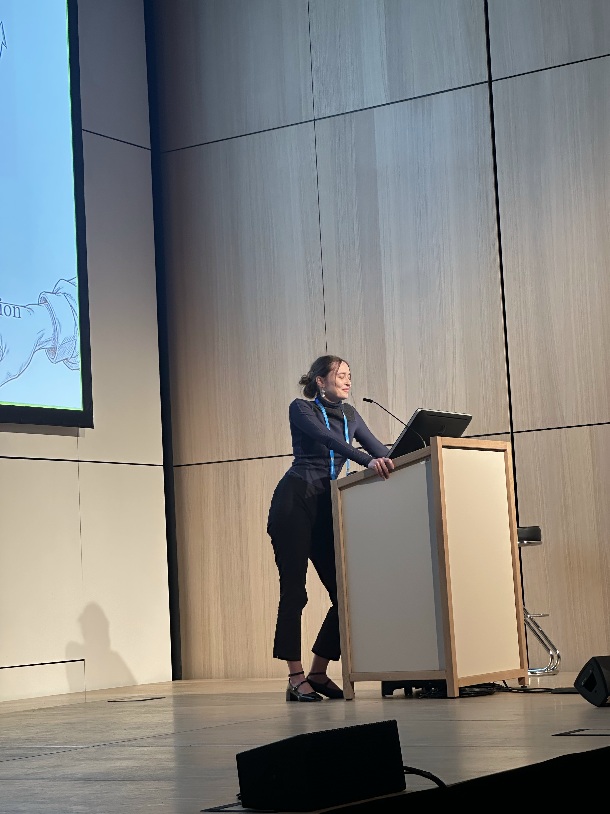
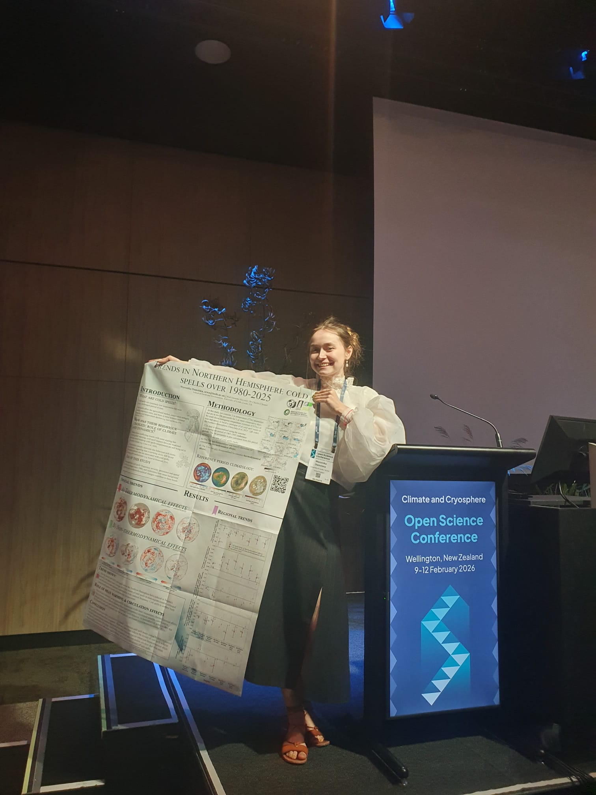
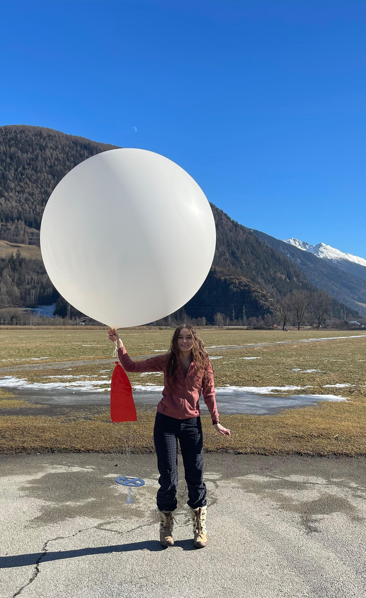

Climate Scientist

PhD Student at the University of Leeds.
Title of thesis: The drivers, trends and dynamics of cold spells in the Northern Hemisphere.
Masters in Physics from the University of St Andrews

Published Papers
First Author
Osmolska, W., Maycock, A. C., & Chemel, C. Drivers of Trends in Northern Hemisphere Cold Spell Characteristics Over 1980-2025, Geophysical Research Letters, 2026.
Osmolska, W., Chemel, C., & Maycock, A. C. A Methodology for Tracking Cold Spells in Space and Time: Development, Evaluation and Applications, Weather and Climate Dynamics, 2025.
Other Collaborations
Marques, C.A., Rhodes, L.C., Osmolska, W. et al. Emergent exchange-driven giant magnetoelastic coupling in a correlated itinerant ferromagnet, Nature Physics, 2025.
Marques, C.A., Murgatroyd, P.A.E., Fittipaldi, R. et al. Spin-orbit coupling induced Van Hove singularity in proximity to a Lifshitz transition in Sr4Ru3O10, npj Quantum Materials, 2024.
Rhodes, C.L., Osmolska, W., Marques, C.A. & Wahl, P. Nature of quasiparticle interference in three dimensions, Physical Review B, 2023.

Outreach
Written an article for The Conversation, which has been read by over 10,000 people.
Worked on a cloudspotting campaign with the White Stuff.
Made outreach videos with the National Center for Atmospheric Science.